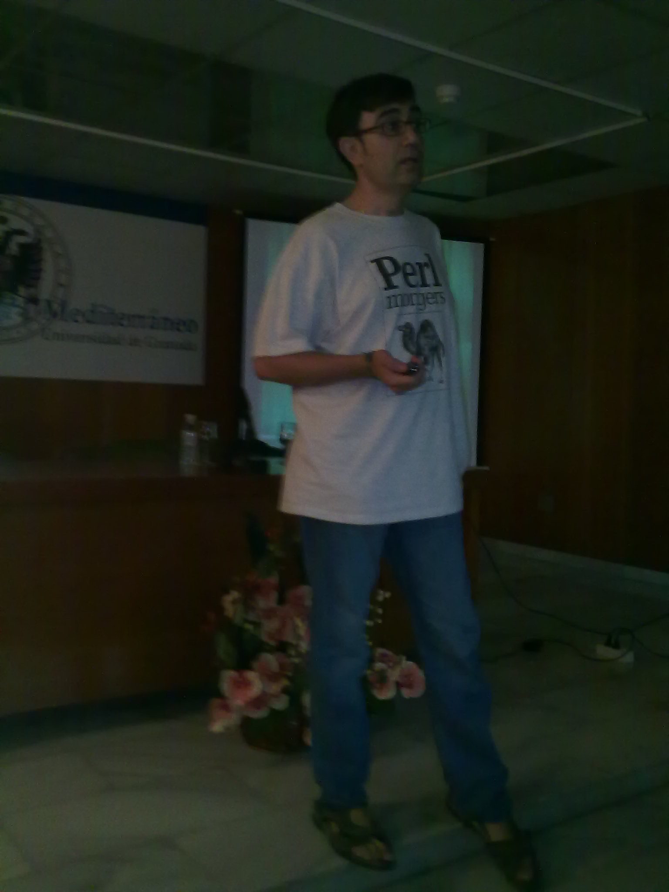

Fotografías en movimiento
This is an archived post This is an archived post
Previous
Index
Next
En Almuñécar @jjmerelo habla de conocimiento libre.
July 29 2010, 2:47 AM
by fernand0

187 views and 0 responses